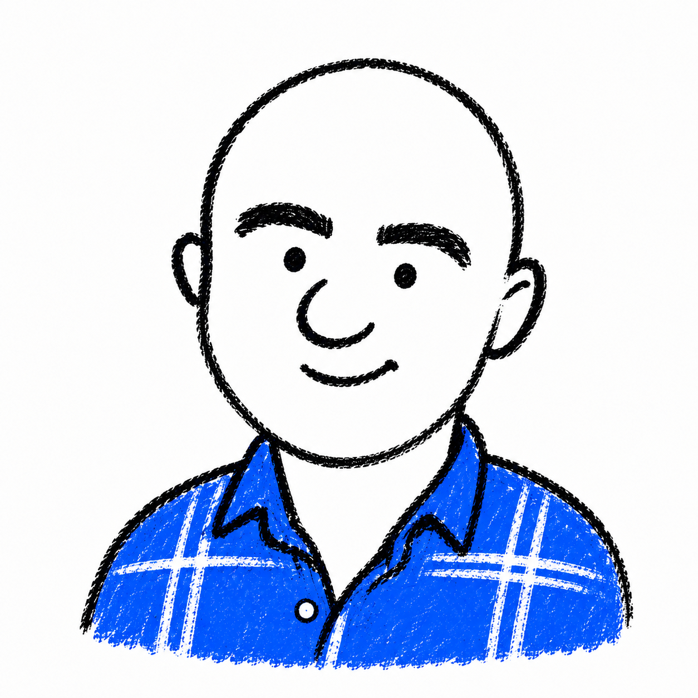

eCommerce product consulting
eCommerce product consulting that connects customer insight, product strategy and hands-on delivery across discovery, buying and selling experiences.
eCommerce · AI-first experiences · Product leadership
Get to market in weeks.
eCommerce product consulting, AI-first experiences, executive product direction, and a full-stack builder to take the idea into the market. I connect product strategy, design and development so you can test the proposition and learn from real customers.
What we bringFrom the why, to the what, and finally the how.
01 / Services
The skills and ownership to get your product moving, with consumer insight at the heart of what we build.
eCommerce product consulting that connects customer insight, product strategy and hands-on delivery across discovery, buying and selling experiences.
Design and build AI-first product experiences: voice commerce, conversational discovery and interfaces that respond to what customers need.
Fractional product leadership and executive product direction: clarify the proposition, align priorities and connect product strategy with execution.
A hands-on full-stack product builder connecting product strategy, experience design, frontend, backend and deployment to take your MVP from concept to launch.
02 / What we bring
Product, design, and development skills to connect your business goals to a product people can use. A clear path from the opportunity to the first release.
Translate business goals into a product direction. Identify the user problem, define the MVP, and focus on what will move the business forward.
Product managementShape the experience through clear journeys, prototypes, and practical design. Test the important assumptions before committing to a full build.
Experience & designDevelop across the stack, connect the systems, and take the MVP to market. Learn from real use and give the next iteration a clear direction.
Full stack development03 / Projects
Try the demos and read about the product decisions behind them.

01 / Commerce / Live concept
A voice-first ecommerce discovery experience.
Search for electronics by voice, ask about individual products, and compare the options as your requirements become clearer.

04 / Analytics / Live conversation
Answers that arrive while the conversation is happening.
A working analytics demo and a product direction: ask a question, see the evidence, and explore a follow-up without losing the graph.
04 / About

I’m Aditya Vithaldas, the product thinker and hands-on builder behind decisionos. I bring product management, design, and development together to help businesses turn ambition into a working product. Fractional product building, backed by 15 years of experience across the disciplines.
We start with the consumer and the business problem. From there, we shape the proposition, define a focused MVP, and work through the experience and the systems that make it possible.
Our approach is hands-on: the decisions, the design, and the code. We connect strategy with execution and take ownership through development, deployment, and hosting, so the path from concept to market stays clear.
Have something in mind?
Tell me a little about what you need, and I’ll get back to you by email.